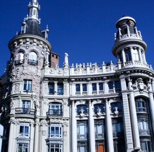
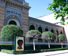
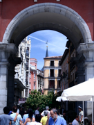
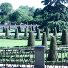
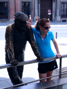

MADRID

A Diverse City
Saturday, July 3
We took the 9:45 train again, this time all the way to Madrid and we got to do it in a first class car that included a meal, drinks and even a movie! (“Everybody’s Fine” – one that Karen and Claire bawled their eyes out watching.)
We checked into our hotel (Intur Palacio San Martin) where our room had a king bed (which George later declared extremely uncomfortable!) and a cot for Claire. The hotel used to be the American Embassy and is in a terrific location – we were able to walk to all the sights of Madrid!
PHOTOS
Large
Typical architecture
Top
Inside Parque del Retiro
2nd
Plaza Mayor
3rd
Parque del Retiro
4th
Claire with friend
OUR FAVORITES
Food
Suckling Pig at Botin
Sight
The Royal Palace
Experiences
Happening upon the Gay/Lesbian/Transgender/Bisexual parade!
Watching World Cup soccer in a local bar
Culture
Learning about Spanish art at the Prado






We found a great restaurant for lunch – it was in a cool dark building (Restaurante Cathedral on Calle San Jeronimo) and offered a 3-course meal for 15 Euros (including scrumptious desserts).
Then we headed off for the Prado…Karen enjoyed looking at all the world famous paintings (the audio guide was a must), but George and Claire were DONE after 90 minutes. So off we went to the Parque del Retiro nearby, looking for a quiet, restful, cool oasis from the city, but found instead a MAJOR gay parade taking place just outside the gates. Oh the sights we saw!
We asked the hotel receptionist where to go to watch the Spain vs. Paraguay quarterfinal World Cup game, and he said we’d have to go right away to find a spot in one of the bars. Too tired and sweaty to take that advice, we risked heading out later to the pub right around the corner. We ended up having a fabulous time, as the waiters were friendly, the food and wine were good, and the German guys sitting next to us were quite entertaining! Oh, and Spain won, so that was exciting too. (We learned the next morning that the end of the game was just the beginning for the partying crowd of Madrid, who was up most of the night exhilarating in their victory.)
Sunday, July 4
We met our guide Cristina at 10:00 and she gave us a detailed historical perspective of Madrid. (Karen was interested, but George and Claire zoned out after about 10 minutes.) Karen wasn’t so sure she was going to like the city, because she had read that it was a newer city (and therefore wouldn’t be as interesting or pretty as the others we had seen), but then she realized that “newer” to Spaniards meant the 1700’s!
We went first to see the Opera house and Plaza de Oriente, and then to tour the Royal Palace. The beauty and grandeur were stunning, and what impressed Karen the most were the quartet of Stradivarius instruments and learning about the castrati who entertained the king and queen (look that one up!). Afterwards we headed to the Plaza Mayor and learned that that was where bullfights once took place, as well as entertainment (including criminal punishments!). Cristina took us to see Botin, a restaurant that is in the Guinness Book of Records for being the oldest restaurant in the world that is still in operation (since 1725!). The old wood burning oven still is famous for producing succulent roasted meats, so she recommended we return for dinner.
Cristina also recommended a good place to eat in the Plaza Mayor, tipping us off to a place in the corner, where she says the restaurants are newer and therefore are trying harder by serving better food at a better price. We found that to be the case, and were also surprised at how aggressive the other restaurants were as they tried to “recruit” us to eat with them. Afterwards, we headed off to buy some treats at Valor, a longstanding famous chocolatier.
Then we went back to the hotel for a quick break before heading out again to explore. This time we wandered through Puerta del Sol (a very lively plaza, much like Times Square, especially since that is where New Years Eve is celebrated rather publicly), walked along Calle Alcaia to Gran Via (the buildings are so very GRAND, and then you come to a gorgeous fountain and a huge, beautiful archway). Then we went back to the Parque del Retiro, where this time it met the goal of being a quiet respite!
We did indeed enjoy our meal at Botin (George said the suckling pig was the best pork dish he’d ever had!) and strolled around afterward, enjoying the sights and sounds of the city.